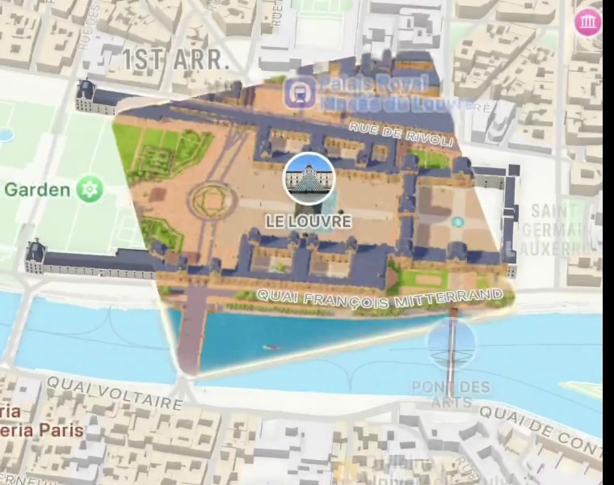
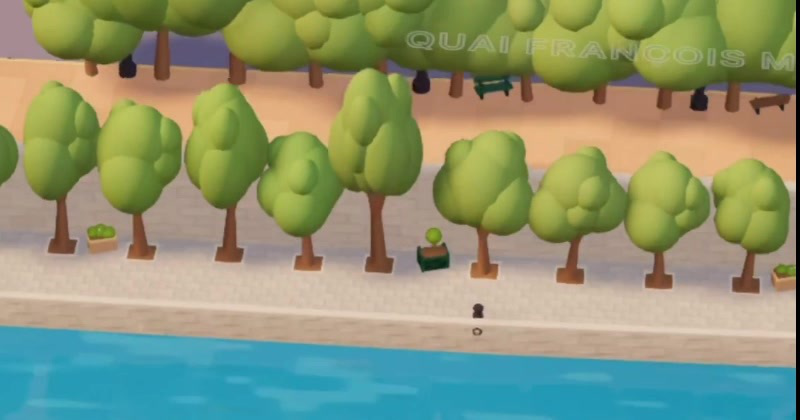
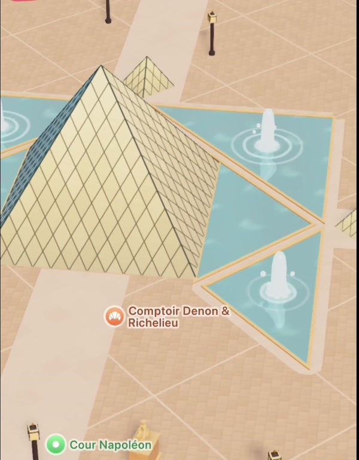

Extras
A shelf for standalone deep dives — pieces that cut across courses or go one level below the polished API. When something is worth building by hand to really understand it, it lands here.
The pieces
- 01-hand-rolled-spring-driver — build a real, interruptible spring engine from scratch: the display-link loop, a semi-implicit Euler solver, mid-flight retargeting, and piping the value straight into a Metal uniform.
- 02-runtime-reflection-and-private-apis — why UIKit is "transparent" to the Obj-C runtime, how to reach underscored classes like
_UINavigationBarPalettewithNSClassFromString/NSSelectorFromString, how to find private APIs (class-dump the dyld cache, live introspection, LLDB, the View Debugger) — and why you must never ship them. - 03-stylised-3d-maps-on-mapkit — how a toy-world Apple Maps render is built: forensic pixel analysis, the VectorKit render stack, and the full swizzling technique for injecting custom Metal into Apple's own private render pass (concrete-class discovery, memoryless-depth substitution, camera & logarithmic-depth recovery, material override) — with the shippable Mapbox/MapLibre alternatives.
More will accrete here over time.
Where it connects
These build on the math from Math for Interactions (springs, integration, dynamical systems), the render machinery in Core Animation, and the shader-feeding patterns in Metal Shaders.
01 — A Hand-Rolled Spring Engine
By the end you'll have the actual machine — a display-link loop, a spring solver, mid-flight retargeting, and the value wired into a Metal uniform.
This is the thing Wave is, with the lid off. You're writing tier-3 by hand, so let me give you the actual machine, not a sketch.
There are four parts: the loop, the solver, the retarget, and the sink (your shader). The loop and the solver are boilerplate you write once. The retarget and the sink are where "you own the state" actually pays off.
(value, velocity, target, dt), the sink receives the number. Retargeting just writes a new target.1. The loop — CADisplayLink
The display link calls you once per frame, synced to the display's refresh. Your only jobs are: compute dt, step the solver, push the value, and stop when settled.
final class SpringDriver {
private var link: CADisplayLink?
private var lastStamp: CFTimeInterval = 0
let spring = SpringValue() // defined below
var onFrame: ((Double) -> Void)? // the sink — where the value goes
func start() {
guard link == nil else { return } // already running
lastStamp = 0
let l = CADisplayLink(target: self, selector: #selector(tick))
l.preferredFrameRateRange = CAFrameRateRange(minimum: 80, maximum: 120, preferred: 120)
l.add(to: .main, forMode: .common) // .common so it survives scroll tracking
link = l
}
@objc private func tick(_ link: CADisplayLink) {
// dt = real elapsed time, not link.duration (which is nominal)
if lastStamp == 0 { lastStamp = link.timestamp; return }
var dt = link.timestamp - lastStamp
lastStamp = link.timestamp
dt = min(dt, 1.0 / 60.0) // clamp — see gotchas
let settled = spring.step(dt)
onFrame?(spring.value)
if settled { stop() }
}
func stop() { link?.invalidate(); link = nil }
}
Two non-obvious bits: .common run-loop mode so the animation doesn't freeze while a UIScrollView is tracking, and computing dt from link.timestamp deltas rather than trusting link.duration (that's the nominal frame time, wrong the moment a frame drops).
2. The solver — a damped spring, mass = 1
State is exactly the two numbers the whole conversation has been about: value and velocity. The target is separate, mutable, and that separateness is interruptibility.
final class SpringValue {
// Physics coefficients (per unit mass)
private var stiffness: Double = 0
private var damping: Double = 0
// Live state — the thing you own
var value: Double = 0
var velocity: Double = 0
var target: Double = 0
// Designer-facing params → physics. This is the SwiftUI/Wave knob set.
func configure(dampingRatio: Double, response: Double) {
let omega = 2 * .pi / response // natural frequency ω₀
stiffness = omega * omega // k = ω₀²
damping = 2 * dampingRatio * omega // c = 2ζω₀
}
// One frame. Returns true when settled.
func step(_ dt: Double) -> Bool {
let displacement = value - target
let acceleration = -stiffness * displacement - damping * velocity
velocity += acceleration * dt // update v FIRST...
value += velocity * dt // ...then x, using the new v
// Settling test: both nearly still
if abs(displacement) < 0.001 && abs(velocity) < 0.001 {
value = target; velocity = 0
return true
}
return false
}
}
That velocity before value ordering is semi-implicit (symplectic) Euler, not a typo. Plain Euler (update value from the old velocity) leaks energy and gets wobbly on stiff springs; swapping the order costs nothing and is dramatically more stable. It's the single highest-leverage line in the file.
The param conversion is the important conceptual bridge: dampingRatio and response are what designers (and SwiftUI's .spring(response:dampingFraction:), and Wave's Spring(dampingRatio:response:)) speak. Underneath they're just ω₀ and 2ζω₀. Same physics, friendlier dials.
3. The retarget — the whole point, and it's one line
Because you hold value and velocity in your own process, redirecting mid-flight is not a cancel-and-restart. It's an assignment:
// Finger lifts — hand the gesture's velocity to the spring and aim it somewhere:
spring.velocity = gestureVelocityInValueSpace // continuity: no snap
spring.target = newDestination
driver.start() // no-op if already running
// New event arrives while it's still moving — just move the goalpost:
spring.target = anotherDestination
// value and velocity are untouched → it arcs smoothly to the new target
That's the "arc" in Wave's PiP demo. The UIKit side looked stiff on interruption because a UIView.animate interrupt has no velocity to carry; here the velocity never leaves the variable, so the redirect is seamless by construction. You don't implement retargeting — you get it for free the instant you stop throwing your state across a process boundary.
During the drag itself, don't run the spring at all — write value directly (1:1 tracking), same rule as the SwiftUI pattern. The spring only turns on at release.
4. The sink — into a Metal uniform
This is your specific case. The onFrame callback is where the animated value leaves the solver and enters your render.
driver.onFrame = { [weak self] v in
self?.uniforms.progress = Float(v) // stash into your uniforms struct
self?.metalView.setNeedsDisplay() // or draw immediately
}
// In your draw call:
encoder.setBytes(&uniforms, length: MemoryLayout<Uniforms>.stride, index: 0)
But here's the sharper move for you, and it collapses two loops into one: if you're already using MTKView, you don't need a separate CADisplayLink at all. MTKView is already driven by one internally — draw(in:) is your per-frame tick. Step the spring right there:
func draw(in view: MTKView) {
let dt = min(CACurrentMediaTime() - lastStamp, 1/60); lastStamp = CACurrentMediaTime()
_ = spring.step(dt)
uniforms.progress = Float(spring.value)
// ...encode and present
}
Set metalView.isPaused = true and enableSetNeedsDisplay = true when nothing's animating (idle, zero GPU), flip to isPaused = false on gesture/retarget to run the loop. So the spring solver and the shader clock become the same clock — the cleanest possible version of "client-side," since value-evaluation and rendering literally share a tick.
Gotchas that will actually bite you
dt explosions. App stalls (a big allocation, coming back from background) → one giant dt → the spring integrates a huge step and detonates the value off-screen. The min(dt, 1/60) clamp is not optional. For very stiff springs (response under ~0.15), even that can shake — the robust fix is fixed-timestep substepping: chop the frame's dt into N fixed slices and step each. Accuracy stops depending on frame rate.
Stopping the link. A CADisplayLink you forget to invalidate() burns the CPU/GPU at 120 Hz forever and pins the ProMotion display high. Always stop on settle; that's what the Bool return is for. Also invalidate() on deinit/disappear.
Underdamped vs the exact solution. Semi-implicit Euler is great and what I'd ship first. The ceiling above it is the analytic closed form — for the underdamped case (ζ<1) you can solve the ODE exactly for any dt:
ω_d = ω₀·√(1−ζ²)
value(t) = target + e^(−ζω₀t)·[ x₀·cos(ω_d t) + ((v₀+ζω₀x₀)/ω_d)·sin(ω_d t) ]
with a matching derivative for velocity. It's exact regardless of frame rate, so it never explodes and needs no clamp — the tradeoff is you branch on the three damping regimes (under/critical/over) and it's more math. That's the tier Wave's solver and iOS's own live at. Reach for it only if Euler's tiny frame-rate-dependent drift ever shows up; for UI it usually doesn't.
Vectorizing. For a CGPoint/CGSize/color, don't run one solver — run the scalar solver per component (x and y each get their own value+velocity) so a diagonal fling curves correctly. A struct-of-SpringValue or a small generic over a "vector arithmetic" protocol is the usual shape. This is precisely what Wave's SpringAnimator<T> generalizes.
ProMotion. preferredFrameRateRange requests 120; you also need CADisableMinimumFrameDuration = true in Info.plist or you're capped at 60 (that plist line in Wave's README is exactly this). MTKView uses preferredFramesPerSecond = 120 instead.
Mental model to lock in
The solver is a pure function of (value, velocity, target, dt); the display link is just a clock that calls it; the sink is just where the number goes. Those three are fully decoupled — which is why the same 30-line solver drives a CALayer.position, a SwiftUI value, or a shader uniform without caring. You built the in-process engine the opening passage was praising, and "interruptible" fell out of it as a side effect of keeping two floats in a variable instead of mailing them to another process.
Where to go next
- The generic vector version — make
SpringValuegeneric over a vector-arithmetic protocol so it drivesCGPoint,CGSize, and colors (each component its own value+velocity), the shape of Wave'sSpringAnimator<T>. - Gesture-velocity conversion — turning a pan's points/sec into the spring's value-space
initialVelocity. It's the one genuinely fiddly bit: you divide the gesture velocity by the distance-to-travel (or map screen units → your value units) so the handoff is continuous.
Related
- The spring as an ODE, and the knobs: Interpolation, Easing & Springs
- Why velocity-first (integration & stability): Dynamical Systems
- The wider family (SmoothDamp, decay, rubber-band): Simulations Beyond the Spring
- Who runs the per-frame loop: What Drives the Value · The Run Loop
- Feeding the value into the GPU: Feeding Data Into Shaders
- Apple's built-in version: CASpringAnimation
- Next: Runtime Reflection & Private APIs → Stylised 3D Maps on MapKit
- Hub: 00-overview
02 — Runtime Reflection & Private APIs (Reverse-Engineering UIKit)
By the end you'll understand why UIKit is "transparent," how to find its hidden classes and methods, and how to call them at runtime — plus exactly when you must not ship it.
Start here — the plain idea
Most of Apple's frameworks — UIKit, Foundation, most of the stack you touch daily — are built on Objective-C. Thank the NeXT lineage (John Sculley pushed Jobs out of Apple, Jobs built NeXT, Apple bought NeXT, and NeXTSTEP became macOS/iOS). Objective-C's defining trait is that it's dynamic: methods aren't hard-wired at compile time, they're looked up by name at runtime through a message dispatcher. Every method call is really "send the message named x to this object."
That one fact makes UIKit more-or-less transparent, for those with eyes to see. If a method is chosen at runtime by its string name, then you can choose that string yourself — including names Apple never put in a public header. The public API is just the part Apple documented; the runtime happily exposes the rest. Reverse-engineering UIKit, in its most straightforward form, is exactly this: runtime reflection using Objective-C selectors.
The catch, stated up front so it colors everything below: this is a superb way to understand the platform and prototype, but shipping private API to the App Store gets you rejected. Treat this as X-ray vision for learning, not a shipping strategy. (More on the honest limits at the end.)
The runtime, in one breath
An Objective-C method call [obj doThing:x] compiles to objc_msgSend(obj, @selector(doThing:), x). Three movable parts:
- The class — an object itself, findable by name.
- The selector — the method's name as a token (
doThing:), also just a string under the hood. - The dispatcher —
objc_msgSend, which looks up the selector in the class's method table at call time.
Because the class and the selector are both resolvable from strings at runtime, nothing in the binary actually hides them. Swift never lost this: import ObjectiveC (or just Foundation) and you have NSClassFromString, NSSelectorFromString, perform(_:), responds(to:), objc_copyClassList, class_copyMethodList, and the rest of the runtime.
The linchpin: picking selector strings at runtime
Here's the whole move in Swift. You never linked against a private header; you named the class and method as strings:
import UIKit
// 1. Resolve an underscored, undocumented class by its name.
guard let paletteClass = NSClassFromString("_UINavigationBarPalette") as? NSObject.Type
else { return } // class not found on this OS version → bail gracefully
// 2. alloc, then call its (discovered) designated initializer that takes a content view.
let allocated = paletteClass.perform(NSSelectorFromString("alloc"))?.takeUnretainedValue()
let initSel = NSSelectorFromString("initWithContentView:")
guard let palette = allocated?.perform(initSel, with: myBottomBar)?.takeUnretainedValue()
else { return }
// 3. Attach it to the nav bar via a private UINavigationItem method — guarded.
let attachSel = NSSelectorFromString("_setBottomPalette:")
if navigationItem.responds(to: attachSel) {
navigationItem.perform(attachSel, with: palette)
}
That's it — _UINavigationBarPalette (Seb's favourite API) is one of these underscored views. It lets you attach arbitrary views onto a navigation bar but without losing the useful accessibility, size transitions, and automatic layout that make most hand-rolled chrome look so Temu-esque. Apple leans on it internally in Calendar, Fitness, Photos, and Messages — and jealously guards it from mortals. With reflection, the guard is just a locked door with the key under the mat.
Two honest wrinkles in that snippet:
- Memory & types.
perform(_:)returns anUnmanaged/AnyObject, and it can't express non-object arguments (a rawCGFloat, aBool) or multi-argument selectors cleanly. For anything beyond one object argument, the robust patterns are an@objc protocolthat declares the private method signature (thenunsafeBitCastthe instance to it and call it type-safely), orNSInvocation(via a small Obj-C shim), orunsafeBitCast-ingobjc_msgSendto a correctly-typed function pointer. - Exact selector names.
initWithContentView:and_setBottomPalette:are what you discover (next section), not guess. Different iOS versions rename things.
How to actually find these things
Reflection lets you call a hidden API; you still have to learn its name. Four escalating techniques:
1. Dump the headers (the map). Every system framework is packed into one big blob, the dyld shared cache (/System/Library/Caches/com.apple.dyld/… on device; the toolchains ship copies). Tools read the Objective-C metadata out of it and regenerate .h files with every class, method, and ivar — public and private:
# Elias Limneos' classdump-dyld, or blacktop's ipsw:
ipsw class-dump dyld_shared_cache_arm64e UIKitCore --headers -o ./headers/
grep -R "_UINavigationBarPalette" ./headers/ # read its real init & methods
This is the single highest-leverage step: you get UIKit's actual interface, underscores and all, and can read what each private method takes and returns.
2. Introspect at runtime (the live probe). From inside a running app you can list what's really there:
var count: UInt32 = 0
if let cls = NSClassFromString("_UINavigationBarPalette"),
let methods = class_copyMethodList(cls, &count) {
for i in 0..<Int(count) {
print(NSStringFromSelector(method_getName(methods[i])))
}
free(methods)
}
objc_copyClassList, class_copyMethodList, class_copyIvarList, and class_getSuperclass let you walk the entire live type graph — useful when headers are stale.
3. Spelunk in the debugger (the interactive way). Pause in LLDB and poke: po type(of: someView) reveals the real _UISomething class; the View Debugger (Debug ▸ View Hierarchy) shows Apple's private view classes in any running app — open Calendar or Photos in the simulator and read the class names off the inspector. image lookup -rn _UINavigationBarPalette and expression let you call methods live.
4. Read Apple's own apps. The private views Apple uses are visible in the view hierarchy of their apps. Spotting _UINavigationBarPalette under Photos' nav bar is how you learn it exists in the first place.
(One modern caveat: Swift-only frameworks have no Obj-C metadata, so class-dump comes up empty — there you fall back to nm + swift demangle on the binary to recover symbol names. But UIKit is Obj-C, so it's wide open.)
The honest limits — read this before you get ideas
- App Store review will reject it. Static analysis scans your binary for known-private selector strings. Obfuscating them (building the string at runtime, XOR'ing it) is itself against the rules and a cat-and-mouse you lose. Private API is fine for: learning, prototypes, internal/enterprise distribution, jailbreak tweaks, and understanding the platform — not the public App Store.
- It's undocumented, so it breaks. A method that exists in iOS 26 can vanish or change signature in 27. Always feature-detect (
NSClassFromString != nil,responds(to:)) and have a public-API fallback, so a missing private path degrades instead of crashing. - It can crash hard. Wrong argument types to
objc_msgSendcorrupt the stack. Verify signatures from the dumped headers, not vibes.
Why learn it even if you never ship it
Reverse-engineering UIKit this way is the fastest route to actually understanding it. You see the real class graph (how UINavigationBar, its palettes, and its layout guides truly relate), you discover the well-designed private APIs Apple uses internally (and can often reimplement the idea with public API), and you stop treating the framework as a black box. It's the same "lid off" instinct as the hand-rolled spring engine — build/inspect the machine, don't just consume it.
The foundation
- Objective-C is dynamic = methods are dispatched by name at runtime via
objc_msgSend, not fixed at compile time — which is why UIKit is inspectable. - class + selector are strings =
NSClassFromString/NSSelectorFromStringresolve them at runtime, including underscored/private ones. perform(_:)/@objc protocol/ typedobjc_msgSend= the ways to actually call a discovered method (with rising robustness for non-object args)._UINavigationBarPalette= a private view for attaching custom content under the nav bar while keeping a11y, size transitions, and layout — Apple uses it everywhere, guards it from you.- Finding names = class-dump the dyld shared cache for headers,
class_copyMethodListto introspect live, LLDB + the View Debugger to spelunk, and read Apple's own apps. - Guard everything =
NSClassFromString != nil+responds(to:)+ a public fallback, because private API is undocumented and version-fragile. - Don't ship it = App Store review rejects private API; this is for learning, prototypes, enterprise, and jailbreak — not the public store.
Related
- The framework you're prying open: UIKit Internals — esp. the responder chain and VC lifecycle.
- Same "lid off" spirit: A Hand-Rolled Spring Engine.
- Source & inspiration: Jacob Bartlett, Forbidden iOS (blog.jacobstechtavern.com); tooling: Elias Limneos'
classdump-dyld, blacktop'sipsw. - Prev: A Hand-Rolled Spring Engine · Next: Stylised 3D Maps on MapKit
- Hub: 00-overview
03 — Stylised 3D Maps on Apple MapKit
By the end you'll understand exactly how a "toy-world" map render — purple roofs, blobby trees, tiny cars — is painted on top of Apple's own 3D map, why it works, how to build it rung by rung, and why you can't ship it. We start with pixels and end inside Apple's Metal render pass.
Start here — the one-line answer
You've probably seen the clip: Apple Maps, but recoloured into a soft, saturated toy world — cream turned warm, roofs gone blue-purple, foliage a cartoon green, little vehicles rolling around the Louvre. The instinct is "someone wrote a 3D game engine" or "someone slapped a filter on the map." Both are wrong, and the whole lesson lives in why.
Here's the real answer in one breath: the geometry, labels, trees, street furniture and landmarks are all Apple's — from MapKit's Detailed City Experience. The toy palette comes from custom Metal shaders injected into Apple's own private render pass, by swizzling the Metal command-buffer and encoder classes. There is no public API for this. It's a technique to learn from and demo with, not to ship — but everything you learn building it transfers directly to map SDKs that expose the same hook legitimately.
This lesson is the applied sequel to Runtime Reflection & Private APIs. That one taught you how to reach into a private framework; this one is a full, real-world case study of doing it to the most beautiful 3D data on the platform. We'll climb slowly — forensics first, then the stack, then the hook, then the hard math — so each rung is solid before the next.
1. Detective work first — how do we even know?
Before any theory, the evidence. The right move with a mystery like this is the one a good reverse engineer always makes: don't trust your eye, sample the pixels. Decode the recording to frames and read actual RGB values, because the frame that disproves the obvious readings is easy to miss at full speed.
The frame that settles it. At one moment there's a feathered polygon around the Louvre where the stylised render sits directly on top of stock Apple Maps. Inside the polygon: warm ground, purple-blue roofs, saturated green. Outside: Apple's exact default cream land, grey buildings, standard blue water. Same labels, same roads, same geometry — different look, with a visible content boundary between them.

That single frame kills two hypotheses at once:
It's not a fullscreen filter. If a shader were applied over the whole map view (SwiftUI's .colorEffect, a CIFilter, a CALayer compositing filter), the grade would be uniform across the viewport. It isn't. Sample it and you see the proof:
It's not a custom engine, either. The geometry is unmistakably Apple's: the Louvre pyramid's diamond lattice and its fountains (an Apple landmark mesh), the generic street-furniture kit (lamp posts, bollards, benches, bins, tiny pedestrians), road labels painted flat onto the ground in outlined caps, and POI pins with Apple's circular category glyphs and Apple's POI dataset. Nobody rebuilds all of that and re-implements Apple's label-layout engine to match. He's wearing Apple's world, not building one.

And it's not a tile overlay. MKTileOverlay is 2D raster images in a Mercator grid. This is pitched 3D with correct depth ordering against buildings. Rules itself out.
The clincher. That feathered boundary is Apple's own streaming boundary — DCE meshes load per-region and cross-fade in. Because the custom shading is attached to the draws that render that mesh, the restyle inherits Apple's fade for free. That's the strongest positive evidence for render-pass interception rather than any overlay: a layer you composited yourself would never line up with Apple's fade that perfectly.
The general lesson, stated once up front: when you can't read the spec, measure the system. Sampling pixels instead of trusting your eye is the same skill we'll use later to recover Apple's secret depth formula. Hold onto it.
2. How Apple Maps actually renders
You can't hook something whose shape you don't understand. Here's the stack — all of which you can verify yourself in a GPU frame capture (section 8).
Identifying the main scene pass is the first real skill. It's the pass that has both: a depth attachment, and a colour attachment (or MSAA resolve target) that is the layer's current drawable. Those two properties together are its fingerprint.
The three non-obvious properties of that pass
These three are the whole difficulty of the technique, and none of them is documented — all three are recovered by experiment. Understanding them now will make the later code make sense.
(a) The depth buffer is memoryless. On Apple GPUs, depth lives in on-chip tile memory and is never written back to system RAM — the attachment's storageMode is .memoryless and/or its storeAction is .dontCare. You can render against it inside the pass, but you cannot read it after the pass to learn how it's encoded. (We fix this in §5.)
(b) Depth is logarithmic. Most engines write z/w from a standard perspective matrix, giving depth proportional to 1/d. VectorKit does not. The recovered mapping fits depth(d) = a + b·ln(d) far better than a + b/d. This makes sense for a map — you need usable precision from a metre away out to the horizon, across many orders of magnitude. If you emit ordinary clip-space z, your geometry will z-fight or float through buildings at most distances. You must emit their encoding.
(c) The camera is ~29.6° vertical FOV with a principal-point offset. Not 60°, not 45°. And the principal point is nudged vertically, so the horizon doesn't sit where a textbook symmetric frustum would put it — presumably so that at high pitch more of the ground ahead stays visible. You recover both numerically rather than guessing (§6).
Detailed City Experience — the free lunch
DCE is Apple's hand-built 3D data: detailed building geometry, landmark meshes, trees, street furniture, elevation. It shipped in Maps.app in iOS 15 and was opened to third-party MapKit apps in iOS 16 via MKStandardMapConfiguration(elevationStyle: .realistic). Coverage is a specific city list (Paris, London, New York, San Francisco, Los Angeles and others — Apple publishes it on its iOS Feature Availability page).
Internalise this: the expensive part of the effect is free. Apple spent years and a fortune building that world. You're buying a repaint, not a construction project. That is the entire reason this technique is worth the pain.
3. The public ceiling — what you can ship
Know exactly where the wall is before you climb over it, because a surprising amount is legitimate and you should exhaust it first.
let config = MKStandardMapConfiguration(elevationStyle: .realistic,
emphasisStyle: .muted)
config.showsTraffic = false
config.pointOfInterestFilter = .init(including: [.cafe, .restaurant])
mapView.preferredConfiguration = config
mapView.overrideUserInterfaceStyle = .dark // night palette
mapView.camera = MKMapCamera(lookingAtCenter: coord,
fromDistance: 1400,
pitch: 55,
heading: 210)
What the public API gives you:
| Capability | API | Since |
|---|---|---|
| 3D buildings, terrain, landmarks | elevationStyle: .realistic |
iOS 16 |
| Overall map emphasis (muted / default) | emphasisStyle |
iOS 16 |
| Day / night palette | overrideUserInterfaceStyle |
iOS 13 |
| Which POI categories appear | MKPointOfInterestFilter |
iOS 13 |
| Custom views for Apple's POIs | MKMapFeatureAnnotation, selectableMapFeatures |
iOS 16 |
| Your own 2D raster tiles | MKTileOverlay |
iOS 7 |
| 2D vector overlays | MKOverlayRenderer & friends |
iOS 7 |
| World → screen projection | convert(_:toPointTo:) |
iOS 3 |
| Camera limits | cameraBoundary, cameraZoomRange |
iOS 13 |
What you do not get. Apple Developer Technical Support has said it plainly: "There isn't an API to add your own 3D features to the map." Same for materials, palettes, lighting, or any hook into the render pass. Nothing in iOS 26 changes this.
The cheap near-miss. SwiftUI's .colorEffect / .layerEffect (iOS 17+) applies a Metal fragment function to a rasterised view. Wrap MKMapView in a UIViewRepresentable and grade it — do try it, it takes twenty minutes and teaches you something. But it (1) grades everything uniformly, including your own annotations and UI; (2) has access only to final colour — no depth, normals, or material identity, so no "blue roofs, green trees" by category; and (3) forces an offscreen rasterisation of a continuously-animating Metal view every frame. The detective work in §1 already proved this isn't what the video does.
4. The big idea: inject into Apple's own pass
Here is the pivot from "legitimate" to "forbidden," and it's conceptually simple. Instead of drawing over the map, you get your Metal draws inside the same render pass VectorKit is already encoding. You do that by swizzling (method-replacing — see lesson 02) the Metal objects, so that at the moment Apple is about to finish its main pass, your encode runs first.
The payoff of being inside the pass: you share Apple's depth buffer, so occlusion is free in both directions — a sphere you add is correctly hidden behind a building, and correctly hides a tree behind it. No compositing, no manual masking.
Source of the technique, for honesty's sake: Charly Delaroche (co-founder of Zenly, which built its own C++ map engine) demonstrated this publicly as "same pass · injected geometry." The open reproduction is milind-soni/mapsphere (MIT) — it puts the Las Vegas Sphere inside Apple Maps with native building occlusion, ~1,000 lines across two files. The code shapes below follow it. Read the whole repo before writing anything.
5. The technique, rung by rung
Now the heat rises. Each sub-step below is a real trap that the technique has to solve. Read them in order; they build.
5.1 Find the concrete Metal classes
First trap: MTLCommandBuffer and MTLRenderCommandEncoder are protocols. You can't swizzle a protocol — there's no implementation behind it. The real objects are private concrete classes whose names vary by OS and platform (MTLDebugCommandBuffer, MTLIGAccelCommandBuffer, AGXG…, and so on).
So: make a throwaway command buffer and encoder yourself, ask object_getClass what they actually are, and swizzle those. Crucially, do this before installing any hooks, or your own dummy calls recurse into them.
guard let dev = MTLCreateSystemDefaultDevice(),
let q = dev.makeCommandQueue(),
let cb = q.makeCommandBuffer() else { return }
let cbCls: AnyClass = object_getClass(cb)!
let td = MTLTextureDescriptor.texture2DDescriptor(
pixelFormat: .bgra8Unorm, width: 4, height: 4, mipmapped: false)
td.usage = [.renderTarget]
let dummyTex = dev.makeTexture(descriptor: td)!
let rp = MTLRenderPassDescriptor()
rp.colorAttachments[0].texture = dummyTex
rp.colorAttachments[0].loadAction = .clear
rp.colorAttachments[0].storeAction = .dontCare
let dummyEnc = cb.makeRenderCommandEncoder(descriptor: rp)!
let encCls: AnyClass = object_getClass(dummyEnc)!
dummyEnc.endEncoding()
// NOW install hooks
swizzleNextDrawable()
swizzleEncoderCreation(on: cbCls)
swizzleEndEncoding(on: encCls)
5.2 Recognise the screen, then the main pass
Hook CAMetalLayer.nextDrawable and record every drawable texture in a weak set. That set is your definition of "this renders to the screen."
let sel = #selector(CAMetalLayer.nextDrawable)
let m = class_getInstanceMethod(CAMetalLayer.self, sel)!
typealias Fn = @convention(c) (AnyObject, Selector) -> AnyObject?
let orig = unsafeBitCast(method_getImplementation(m), to: Fn.self)
let block: @convention(block) (AnyObject) -> AnyObject? = { obj in
let r = orig(obj, sel)
if let d = r as? CAMetalDrawable { DrawableRegistry.record(d.texture) }
return r
}
method_setImplementation(m, imp_implementationWithBlock(block))
Then hook renderCommandEncoderWithDescriptor: on the concrete command-buffer class and classify each pass as it's created:
let hasDepth = desc.depthAttachment?.texture != nil
let drawableMatch = DrawableRegistry.contains(colorTex)
|| DrawableRegistry.contains(resolveTex)
let big = target.width * target.height >= 500_000
let isMain = hasDepth && (drawableMatch || big)
The big fallback catches two cases: MSAA, where the drawable is the resolve target rather than the colour attachment; and a cold registry that hasn't warmed up yet. For each main pass, record everything you'll need later: colour format, depth format, stencil format, sample count, dimensions, whether depth is reversed (clearDepth < 0.5), the command buffer, and the depth texture.
5.3 Substitute the depth texture
Apple's depth is memoryless (§2a), so you can't read it back. The fix: swap in your own persistent depth texture before the encoder is created — the descriptor is snapshotted at creation time, so mutating it afterward does nothing.
private static func substituteDepth(_ desc: MTLRenderPassDescriptor) {
guard let da = desc.depthAttachment, let dt = da.texture,
da.loadAction != .load,
desc.colorAttachments[0]?.texture != nil else { return }
guard dt.storageMode == .memoryless || da.storeAction == .dontCare else { return }
// cache by size × format × sampleCount (lookup elided) ...
let td = MTLTextureDescriptor()
td.textureType = dt.textureType // will be .type2DMultisample
td.pixelFormat = dt.pixelFormat
td.width = dt.width; td.height = dt.height
td.sampleCount = dt.sampleCount
td.storageMode = .private
td.usage = [.renderTarget, .shaderRead] // shaderRead is the whole point
let sub = dt.device.makeTexture(descriptor: td)!
let sharesStencil = desc.stencilAttachment?.texture === dt
da.texture = sub
da.storeAction = .store // keep it after the pass
if sharesStencil { desc.stencilAttachment?.texture = sub }
}
Three things to get right: cache by size × format × sampleCount and flush on rotation; preserve textureType (it'll be .type2DMultisample); and handle the packed depth-stencil case where one texture serves both attachments.
And note the cost you've just taken on: memoryless depth exists because writing it back is expensive. You're now paying that bandwidth every frame. Budget for it.
5.4 Reconstruct the camera
To draw into the scene correctly you need a view-projection matrix that reproduces MapKit's own projection. Work in a local ENU frame (x = East, y = North, z = Up, metres) anchored at your site.
static func cameraEye(target: SIMD3<Double>, distance: Double,
pitchDeg: Double, headingDeg: Double) -> SIMD3<Double> {
let pitch = pitchDeg * .pi / 180
let h = headingDeg * .pi / 180
let a = SIMD3<Double>(sin(h), cos(h), 0) // azimuth the camera faces
return target - a * (distance * sin(pitch))
+ SIMD3<Double>(0, 0, distance * cos(pitch))
}
Feed it target = enu(camera.centerCoordinate), distance = camera.centerCoordinateDistance, and pitch/heading straight off MKMapCamera. Then a standard look-at with up = (0,0,1), and a Metal-convention projection (clip z in [0,1]) with an off-centre principal point:
static func perspective(fovYRad: Double, aspect: Double, zn: Double, zf: Double,
cx: Double, cy: Double, reversed: Bool) -> simd_double4x4 {
let ys = 1.0 / tan(fovYRad * 0.5)
let xs = ys / aspect
let zz: Double, zw: Double
if reversed { zz = 0; zw = zn }
else { zz = zf/(zn - zf); zw = zn*zf/(zn - zf) }
return simd_double4x4(columns: (
SIMD4<Double>(xs, 0, 0, 0),
SIMD4<Double>(0, ys, 0, 0),
SIMD4<Double>(cx, cy, zz, -1), // cx/cy = principal point offset
SIMD4<Double>(0, 0, zw, 0)
))
}
Do all of this in double and convert to float only at the very end — at city scale with metre-level geometry, float accumulates visible drift.
Calibrate fovY and cy by fitting, not guessing. Two unknowns remain. The trick: mapView.convert(coordinate, toPointTo:) is public and gives you ground truth for any coordinate. So sample a ring of ground points, project them with your candidate matrix, and search for the parameters that minimise the reprojection error.
// 8 ground points on a 400 m ring + the centre
for k in 0..<8 {
let ang = Double(k)/8.0 * 2 * .pi
let dE = 400*cos(ang), dN = 400*sin(ang)
let p = mapView.convert(coordFrom(dE: dE, dN: dN), toPointTo: mapView)
samples.append((SIMD3<Double>(dE, dN, 0), p))
}
func residual(_ fov: Double, _ cyv: Double) -> Double {
var m = model; m.fovYDeg = fov; m.cx = 0; m.cy = cyv
let vp = MatrixMath.viewProj(cam: m, aspect: aspect, reversed: false)
var err = 0.0
for (world, pt) in samples {
let clip = vp * SIMD4<Double>(world.x, world.y, world.z, 1)
if clip.w <= 0 { return 1e9 }
let sx = (clip.x/clip.w * 0.5 + 0.5) * Double(size.width)
let sy = (1 - (clip.y/clip.w * 0.5 + 0.5)) * Double(size.height)
err += hypot(sx - Double(pt.x), sy - Double(pt.y))
}
return err / Double(samples.count)
}
// coarse sweep → offset sweep → fine sweep
Three brute-force passes run in microseconds and converge on ≈29.6° with a mean reprojection residual around 3 px. Re-run it whenever the camera changes substantially, and put the residual on screen — if it climbs above ~5 px something in your ENU conversion is wrong and nothing downstream will work.
5.5 Recover the depth mapping — the cleverest part
This is the rung most worth understanding, because it's the general pattern from §1 applied again: when you can't read the spec, measure the system. You can't read how Apple encodes depth — so you'll make Apple encode some depths for you, measure them, and fit the curve.
Step 1 — read back. After endEncoding on a main pass, dispatch a tiny compute kernel against your substituted depth texture, sampling a vertical line of pixels down the lower screen (fractions 0.68 → 0.96, where you can be fairly sure you're looking at flat ground, not buildings or sky).
kernel void depthProbeMS(depth2d_ms<float, access::read> dt [[texture(0)]],
device float *outv [[buffer(0)]],
constant uint2 *coords [[buffer(1)]],
uint gid [[thread_position_in_grid]]) {
outv[gid] = dt.read(coords[gid], 0);
}
Step 2 — compute true distances. For each probed pixel, use your own calibrated inverse view-projection to raycast against the ground plane z = 0 and get the real eye-to-ground distance. You now have pairs of (distance, depth).
Step 3 — fit, robustly. Fit in both candidate spaces and let the data choose:
let fitR = theilSen(xs: ds.map { 1.0 / $0 }, ys: ys) // depth = a + b/d
let fitL = theilSen(xs: ds.map { log($0) }, ys: ys) // depth = a + b·ln(d)
let useLog = fitL.resid < fitR.resid * 1.5
let valid = f.resid < 8e-4 && abs(f.b) > 1e-9
Use Theil–Sen (median of all pairwise slopes), not least squares, so one probe pixel that happened to land on a bus shelter doesn't drag the fit. Log wins decisively — and that's how you learn VectorKit uses logarithmic depth. You didn't read it anywhere; you measured it.
Step 4 — emit their depth, not yours. In your vertex shader, overwrite the clip-space z:
o.pos = u.mvp * float4(p.xyz, 1.0);
if (u.params3.w > 0.5) { // depth fit is valid
float d = max(o.pos.w, 0.05); // view-space distance
float dep = (u.params3.x > 0.5)
? (u.params3.y + u.params3.z * log(d)) // a + b·ln(d)
: (u.params3.y + u.params3.z / d); // a + b/d
o.pos.z = clamp(dep - 0.0008, 0.0, 0.9999) * o.pos.w;
}
Multiply by w because the hardware will divide by it. The -0.0008 bias wins coincident-surface ties in your favour so your geometry doesn't shimmer against the ground.
Step 5 — derive the compare function from the sign of b. If depth increases with distance use .less; if it decreases (reversed-Z) use .greater. Don't hardcode it:
let increasing = probe.isLog ? (probe.b > 0) : (probe.b < 0)
mode = increasing ? .less : .rev
Step 6 — hysteresis. Re-probe every ~20 main passes, and keep the last good fit when a frame's probe is noisy. Dropping to no-fit for even one frame makes your geometry flash through buildings, which reads as a glitch.
5.6 Encode your draw
Hook endEncoding on the concrete encoder class. If this encoder is a registered main pass, encode your work first, then call through to the original:
let block: @convention(block) (AnyObject) -> Void = { obj in
if let info = PassRegistry.take(obj), let enc = obj as? MTLRenderCommandEncoder {
Renderer.shared.encode(on: enc, pass: info)
orig(obj, sel)
Renderer.shared.probeIfDue(pass: info) // after the pass closes
} else {
orig(obj, sel)
}
}
Your pipeline state must match the pass exactly or PSO creation fails:
pd.colorAttachments[0].pixelFormat = pass.colorFormat
pd.depthAttachmentPixelFormat = pass.depthFormat
if pass.stencilFormat != .invalid {
pd.stencilAttachmentPixelFormat = pass.stencilFormat
}
pd.rasterSampleCount = pass.sampleCount // MSAA — the usual silent killer
Cache PSOs keyed on that whole tuple (it changes on rotation and resize), and log the failure path — a mismatched rasterSampleCount fails quietly, and you'll lose an hour wondering why nothing draws.
5.7 Compile shaders at runtime
library = try dev.makeLibrary(source: shaderSource, options: nil)
No .metallib build step, no Xcode project — keep the Metal source in a Swift string and recompile on launch. For exploratory work the iteration speed is worth far more than the startup cost. (See feeding data into shaders for the uniform-plumbing side of this.)
6. Three things you can do with the hook
Same hook, three escalating payloads. mapsphere adds one object; the video restyles everything.
6.1 Additive geometry (easiest — start here). Append your own draws at the end of the main pass: cars, boats, birds, a character, a route ribbon, a 3D pin that buildings correctly occlude. Shares Apple's depth buffer, so occlusion is free both ways. This is exactly what mapsphere does and the right first target.
6.2 Full-pass re-shade (medium). Draw a fullscreen quad at the end of the pass that re-shades using the colour target plus the depth texture you substituted. With depth you can reconstruct normals → toon banding, depth fog, rim light, palette quantisation. Better than a SwiftUI colour effect because you have depth. Still limited: you know how far a pixel is, not what it is — so no "roofs blue, foliage green" by category, and it grades the whole viewport uniformly (which §1 proved the video does not do).
6.3 Material override (hardest — what the video appears to do). Instead of only appending draws, intercept the drawing calls VectorKit itself makes. Hook setRenderPipelineState:, setFragmentTexture:atIndex:, setVertexBuffer:offset:atIndex: and the draw…Primitives family on the encoder, and for draws you've classified as a given category, substitute your pipeline state and uniforms before letting the call through.
The hard part is classification — deciding which draw is a building and which is a tree, with no names, only signatures. What discriminates in practice: which pipeline-state object is bound (VectorKit reuses a small, stable set); vertex buffer stride and attribute layout; bound texture dimensions and formats (label / facade / foliage atlases differ); draw order within the pass; and index-count distributions (a tree-instance batch looks nothing like a ground tile).
You build the classifier empirically: log every draw in the main pass with its full signature, then force one signature to a flat magenta fragment shader and see what turns magenta. Bisect. It's tedious and it's the only way. Two reasons to believe this is what the video does: the restyle respects Apple's DCE streaming boundary (§1), and different material classes are graded differently rather than by one global transform.
7. The non-Metal half — don't over-attribute the look to shaders
A real share of what makes the clip feel like a product is ordinary UIKit work — and it's the part you can ship.

Avatar bubbles with edge clamping. When a friend is on screen, a normal MKAnnotationView works. When off screen, the bubble clamps to the viewport edge with a tail pointing at them — your own layer, driven by a CADisplayLink:
- Project:
let p = mapView.convert(friend.coordinate, toPointTo: mapView). - If
pis insidebounds.insetBy(margin), place the bubble atpand hide the tail. - Otherwise cast a ray from screen centre toward
p, intersect the inset rect, place the bubble there, show the tail rotated toatan2of the ray direction. - Watch for
clip.w <= 0— a coordinate behind the camera at high pitch projects to a mirrored on-screen point. Check and flip, or friends behind you appear ahead of you.
Update it every frame, not on regionDidChange, or it lags during momentum scrolling and the illusion dies. The toolbar, status chrome and chips are plain SwiftUI composited above the map — keep them above, never inside anything you're grading. (See the run loop & CADisplayLink for why per-frame updates matter here.)
8. Build and debug workflow
Start with a GPU frame capture — before writing any code. This is the highest-leverage hour you can spend. Build a bare MKMapView with .realistic elevation, fly to the Louvre, and take an Xcode GPU frame capture. You'll see VectorKit's entire pass structure, every attachment, every draw call, every bound texture, the depth formats. You learn the thing you're about to hook by reading it, not guessing. Then compare the stock palette against the video — whatever differs is the shader.
Skip the Xcode project. mapsphere builds with swiftc straight against the simulator SDK, assembles a .app, boots a simulator, installs and launches — one script, no project file to fight. Parameters come in as environment variables at launch, so you can sweep a constant without recompiling — which matters enormously when half the work is finding numbers:
xcrun simctl launch --console booted com.example.app # with SIMCTL_CHILD_* set
# SHADER_MODE=1 CAM_H=210 CAM_P=55 CAM_D=1400
# SPHERE_R=82.5 SPHERE_ALT=33.5 DEPTH_MODE=less PROBE_APPLY=0
Put a HUD on screen. Your hooks run on MapKit's render thread — breakpoints are miserable and print races. Render a monospaced overlay, every frame: passes seen, main passes identified, draws encoded, the classification string of the last pass, fitted fovY/cy/residual, the probe's a/b/residual and validity, and the raw probe samples. Nearly every bug announces itself in that label before you see it in pixels.
Validate in the right order. Depth correctness is easy to fake accidentally. Force DEPTH_MODE=always first to confirm you're drawing at all, then turn the fit on and verify occlusion changes. Two separate failures — wrong camera, wrong depth encoding — look identical if you test them together.
9. Pitfalls
| Problem | What happens | Fix |
|---|---|---|
| Swizzling a protocol | class_getInstanceMethod returns nil |
Discover concrete classes via object_getClass on real instances |
| Hook installed before discovery | Infinite recursion on your own dummy calls | Discover first, swizzle second |
| Mutating the descriptor after encoder creation | Silently ignored | Substitute depth inside the creation hook, before orig(…) |
rasterSampleCount mismatch |
PSO throws; nothing draws; no visible error | Match the pass tuple exactly and log the throw |
| Linear clip z | Geometry z-fights / floats through buildings | Emit the fitted log depth from the vertex shader |
| Least-squares depth fit | One bad probe pixel ruins occlusion | Theil–Sen median-of-slopes |
| No fit hysteresis | Objects flash through buildings on noisy frames | Keep the last valid fit |
| Stale depth cache after rotation | Wrong-size texture, corrupt depth | Key the cache on size/format/samples; evict |
| Touching UIKit from the hook | Crashes, races | Lock-protected shared state; UIKit only on main |
| Float matrices | Visible drift at city scale | double throughout, convert at the end |
| Behind-camera coordinates | Annotations appear mirrored | Check clip.w <= 0 |
10. A ladder to climb — eight milestones
Each is independently verifiable, which matters because debugging two unknowns at once in a render-thread hook is brutal.
| # | Milestone | You've succeeded when |
|---|---|---|
| 1 | Bare MKMapView, .realistic, flown to the Louvre. GPU frame capture. |
You can name the main pass and read its depth format and sample count off the capture. |
| 2 | Swizzle nextDrawable only; log drawable size each frame. |
Log lines appear at display rate with plausible dimensions. |
| 3 | Swizzle encoder creation; log each descriptor's classification. | Exactly one pass per frame is tagged main, consistently. |
| 4 | Hook endEncoding; draw a hardcoded fullscreen triangle, compare .always. |
A coloured triangle covers the map. You are inside Apple's pass. |
| 5 | Camera reconstruction; draw an axis gizmo at a known coordinate. | The gizmo sits where mapView.convert says, and tracks pan & pitch. |
| 6 | FOV / principal-point calibration with the HUD residual. | Residual settles under ~5 px; fovY lands near 29.6°. |
| 7 | Depth substitution + compute probe + Theil–Sen fit. | Your object is correctly hidden behind buildings, near and far. |
| 8 | Real animated content; begin logging draw signatures toward material override. | You can force one VectorKit draw category to flat magenta on demand. |
Milestones 1–4 are a weekend. 5–7 are where the real learning is, and where most of the time goes. 8 is open-ended.
11. Shippable alternatives
If the goal is a product rather than a demo, the same architectural idea — draw your own Metal into the map's render pass — is exposed as public API elsewhere:
- Mapbox Maps SDK for iOS —
CustomLayerHost/CustomLayer. You get the command buffer, the render pass descriptor, and the map's projection matrix, and you encode normally. Supported, documented, with an official example. - MapLibre Native (open source) —
MLNCustomStyleLayer, whosedrawInMapView:withContext:hands you anMTLRenderCommandEncoderand the projection matrix. Same shape, no vendor lock-in.
Both also give you full control of the base style — the thing MapKit will not give you at any price. The trade-off is real and worth stating plainly: you lose Apple's DCE data, which is the most beautiful 3D city data on the platform and the entire reason the video looks the way it does. You'd be back to building the world.
That tension is the actual design decision: Apple's world with no control, or your control with no world. The injection technique is interesting precisely because it refuses to choose — and it pays for that refusal with private API.
12. The caveat that matters
This swizzles the private rendering internals of MapKit and VectorKit. It is not App Store material — private API use is a rejection — and separately, any iOS update can change the concrete class names or the pass structure and break it silently. mapsphere's author notes it was exercised only on the simulator; on device, class names and pass layout may differ and you'll have to re-discover them.
Treat this as a technique to learn from and demo with. If you want to ship the look, use §11. And carry the one skill that outlasts any single hack: when the spec is sealed, measure the system against a hypothesis you can falsify — that's how the boundary polygon and the logarithmic depth were both recovered, and it's the same move whether you're sampling pixels or fitting a depth curve.
The foundation
- The look is a repaint, not an engine = all geometry/labels/trees/landmarks are Apple's DCE; only the shading is custom. The expensive part is free.
- MKMapView → VectorKit → CAMetalLayer = a thin public façade over a private Metal renderer that encodes a sequence of passes per frame.
- The main scene pass = the one with both a depth attachment and the layer's drawable as its colour/resolve target. That's your injection point.
- Three undocumented truths = depth is memoryless (can't read it back), depth is logarithmic (
a + b·ln d, not1/d), camera is ~29.6° FOV with a principal-point offset. - Swizzle three Metal methods =
nextDrawable(recognise the screen), encoder-creation (classify + substitute depth),endEncoding(inject your draw). Swizzle concrete classes, discovered viaobject_getClass, never protocols. - Measure the system = recover the depth curve by probing a substituted depth texture, pairing with raycast distances, and Theil–Sen fitting — the same falsify-a-hypothesis skill as the pixel forensics.
- Share Apple's depth buffer = free, correct occlusion both ways; the whole reason to be inside the pass.
- Three payloads = additive geometry (easy) → full-pass reshade (needs depth) → per-category material override (needs empirical classification).
- Ship-ability = none on the App Store; use Mapbox
CustomLayeror MapLibreMLNCustomStyleLayerfor the same idea legitimately, trading away Apple's world.
Related
- Prerequisite technique: Runtime Reflection & Private APIs — swizzling,
NSClassFromString, the private-API caveats this lesson builds on. - The GPU side: Metal Shaders and Feeding Data Into Shaders (uniforms, runtime compile).
- Render-thread context: UIKit Internals · The Run Loop & CADisplayLink.
- Same "lid off" spirit: A Hand-Rolled Spring Engine.
- Sources: milind-soni/mapsphere (MIT, github.com/milind-soni/mapsphere) · Charly Delaroche (Zenly, "same pass · injected geometry") · Apple DTS forum thread 708503 (no public 3D API; DCE for third-party MapKit in iOS 16) · Mapbox & MapLibre custom-layer docs.
- Hub: 00-overview